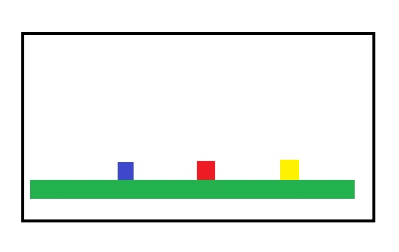

Hej :D
I det här projektet kommer du bygga ett 2D-spel med hjälp av canvas och lite js. Projektet kommer delas upp i mindre delar som alla har sina egna krav. Oavsett hur långt du kommer så kommer du därför ha en färdig produkt. Notera att du inte behöver göra alla delmål för att bli godkänd.
Innan vi börjar prata om vad som ska kodas så vill jag lyfta hur man bör koda. Kör på efter vanliga konventioner så att koden är läsbar. Om du är osäker kan du kolla in några av Mahmuds favoriter
Du kommer koda någonting som påminner om det här (men med mindre detalj):
Några av förenklingarna:
Kika gärna på exemplen i den här om du kör fast annazetterstrom.tech.
Spelet ska visas på en 1000 x 600 px canvas. Ge canvasen en border så att du ser att den dyker upp och inspektera gärna så att du har rätt mått.
Länka ihop med en js-fil. Spara canvasen i variabeln gamecanvas. Hämta canvasreferensen (gamecanvas.getContext('2d')) och spara den i variabeln ctx. Skriv ut ctx i consolen. Om allt gick som det skulle så bör du få 'CanvasRenderingContext2D' som innehåller massa grejer. Good job :)
Måla en blå, en röd, en gul och en grön rektangel på canvasen. Den gröna representerar marken, den röda är en Goomba, den gula är öl och den blåa är Mario. Det kan se ut såhär t.ex:
Till en början kommer allt att målas upp som fyrkanter.
Vi kommer behöva 4 objekt-konstruktorer : Mario, Goomba, Beer och Block. Alla fyra behöver har ha följande egenskaper: x, y, w, h, color och metoden draw till att börja med.
När man skapar objektet mario från konstruktorn Mario ska man behöva ange x och y dvs position. Övriga egenskaper kan vara w = 20, h = 20 och color = 'blue' t.ex.
Goomba och Beer görs på samma vis som Mario fast de har olika färger.
När man skapar block från Block så ska det göras genom att ange x, y, w, och h.
Metoden draw kommer vara gemensam för alla objekt i spelet (så det kan vara lämpligt att använda en funktion). Den ska måla ut en fyrkant med bredden w, höjden h och färgen color på canvasen i punkten (x,y).
Testa att skapa ett objekt från varje objekt-konstruktor och anropa draw-metoderna. Snyggt!
Det är dags att förbereda lite för att få fyrkanterna i canvasen att börja röra sig. Börja med att skriva en global draw-funktion som anropar alla objekts (som förslagsvis kan läggas i en array för enkelhetens skull) draw-metoder. Använd requestAnimationFrame för att loopa den globala draw-funktionen.
En grej som är viktig att tänka på är att sudda det man har målat på canvasen innan man målar igen för att uppdatera bilden. Kika på clearRect-metoden och loopa den tillsammans med draw-funktionen.
Det enklaste sättet att kontrollera om allt fungerar som det ska hittills är att lägga till lite rörelse. Ge Goomba egenskapen vx=1 och metoden move som innehåller x += vx; Anropa sedan goombans move-metod i game-loopen. goomban bör röra sig åt höger nu.
Mega awsome :) Sätt goombans vx = 0 sålänge så att den står still.
Mario behöver också kunna röra sig. Ge honom därför egenskaperna vx=0 och vy=0 samt metoden move. Marios move bör fungera på samma sätt som Goombas: x += vx; y += vy;
Det är bra att ha en global move-funktion som anropar alla objekts move-metoder på samma sätt som draw-funktionen. Anropa move-funktionen i game-loopen.
Nu får du lägga till tangentlyssnare och låta js lyssna på höger- och vänsterpilarna. När man trycker ned högerpilen ska marios vx bli 1 (t.ex) och när man trycker ned vänsterpilen ska vx bli -1. Mario ska stanna när ingen tangent är nedtryckt.
Hittills har vi bara låtit game-loopen köra i all oändlighet men det vore nice om det hände någonting när vi går in i en goomba eller en öl. Den här biten är lite köttig men u can doit! ^.^
Det vi behöver göra är att låta alla objekt som rör sig kolla om de kolliderar med något annat objekt i spelet. En kollision inträffar när två rektanglar överlappar.
Tips: stack overflow rectangle collision detection ;)
Lägg till en global variabel gamestate='running'. Vi vill att game-loopen ska snurra på medan gamestate=='running'.
Om mario kolliderar med en goomba så ska gamestate ändras till 'dead' och om man kolliderar med en öl ska det ändras till 'drunk'.
Om gamestate är 'dead' så ska man kunna trycka enter och få spelet att börja om (dvs reseta game-objekten).
Om man trycker på 'p'-knappen när gamestate är 'running' så ska det ändras till 'paused'. Om man trycker på p när gamestate är 'paused' så ska det ändras till 'running' och loopen ska startas igen.
När mario går in i en vägg (block-objekt) ska han stanna (hastigheten i x-led ska bli 0). Om han faller ner på en plattform/marken (också block) ska han stanna (hastigheten i y-led blir 0).
Nu vill vi göra så att det går att ta sig förbi goomban så att vi kan ta oss till ölen. Det är dags att lära mario att hoppa. Det krävs två saker för ett hopp: en hastighet uppåt och en acceleration nedåt. Intuitivt tänker de flesta att om gravitationen är konstant så borde det bli rätt. Det är inte fel men i många spel är gravitationen högre när karaktärerna är påväg nedåt vilket vi vill efterlikna för att det ger en skarpare känsla.
Börja dock med att ge mario en egenskapen g=1 (gravitation) och lägg till vy+=g; i move-metoden. Testa gärna att köra programmet och kolla så att mario inte faller genom golvet.
Om allt är som det ska såhär långt så är det dags att lyssna efter space på tangentbordet. Om den trycks ned bör marios vy bli -20 t.ex. OBS! mario ska inte kunna hoppa i luften! Om det går bra att hoppa så ska du ta dig förbi goomban och ta ölen.
Nu har du nog känt av att hopprörelsen blir lite slö. Testa därför att sätta g=2 när mario rör sig nedåt och g=1 när han rör sig uppåt. Detta kan behöva lite finjusteringar.
Utöver detta finns det ännu en mekanism i marios hopp: Han hoppar olika högt beroende på hur länge man håller inne hopp-knappen. Detta kan vara lite klurigt att få till och känns inte som en prioritet men kom gärna tillbaka till detta om du har tid.
Nu är det dags att få kameran att flytta sig med mario när han rör sig. Det är den sista core-mekaniken som jag känner att vi behöver implementera för att spelet ska kännas som en 2D-plattformer. Nyckeln är att skriva om x och y i draw-metoderna på objekten så att de beror av marios x och y. Vi kommer börja med att göra en enklare kamera där mario är i mitten av canvasen.
Alla gillar inte matte så jag har gjort en bild i paint (xD) på som visar hur det funkar. Den orangea pilen är marios y-värde och den blåa är var mario målas ut i canvasen. Den blåa är alltid samma eftersom kameran ska röra sig med mario. Detta ger oss den röda och den lilla svarta pilen som är kamerans y-koordinat. Som man ser så får man goombans y-koordinater från kamerans synpunkt genom att dra bort den röda pilen från den långa svarta pilen.
Detta blir basically: yCameraGoomba = yGoomba - yMario + yCameraMario
x-koordinaterna får förstås samma formel.
Bygg en bana med tre goobmas och två nivåskillnader (använd block) mellan mario och beer. Speltesta. Fundera själv på vad som är det enklaste sättet för att spelet ska kännas roligare. Låt mig testa spelet!